Ok it works great but I think I'll stick to this one since it leaves more flexibility:
The main feature I'm missing is Overdub Feedback!
But thanks for sharing, it's a great object!
Rbrt Contributions
Blindsmyth
#12
rbrt
#13
Looper_FB_mono
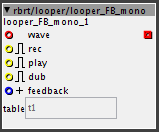
description:
A looper with overdub and feedback-control.
mono version.
update:
-improved the code a bit for efficiency,but only works with 32-bit-tables!
-the length of the loop is now stored with the last sample of the table.
so,when you write the table to sd-card, the looper will remember the
the length of the recorded loop on re-loading.
see example patch 'looper-stomper'
Module requests
rbrt
#14
Looper_FB_stereo
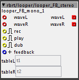
description:
A looper with overdub and feedback-control.
stereo version,needs 2 tables (obviously)
update:
-improved the code a bit for efficiency,but only works with 32-bit-tables!
-the length of the loop is now stored with the last sample of the table.
so,when you write the table to sd-card, the looper will remember the
the length of the recorded loop on re-loading.
see example patch 'looper-stomper'
rbrt
#15
timer
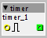
description:
it's a close relative of 'timeri'
if the left inlet is true,'timer' starts counting.
if the left inlet is false, 'timer' puts out the elapsed time (in k-rate ticks,0.333 ms)
rbrt
#16
clocker

description:
another relative of 'timeri'
if the left inlet is true,'clocker' starts counting.the current clock is output through the right outlet.
if the left inlet is false, 'clocker' puts out a zero.
rbrt
#25
kdelay
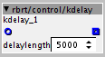
description:
a k-rate delay.
simple mod of the delay/echo object.
Delaying a toggle
rbrt
#26
speedlim
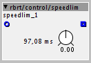
limits the throughput of k-rate data,useful for 'de-bouncing' real-world buttons or de-noising analog inputs.
when the input changes,it's copied to the output and 'speedlim' will wait for the time specified by the dial
before the next input is copied to the output.
Mood_Organ
#27
Thanks for Looper_FB_stereo!
I'd been using a subpatch to do looping but I never solved an issue with overdub (I'd get an audible click sometimes). I just did some testing and I think I'll be able to swap this in.
The save / load functionality is something I'd thought about but not looked at seriously yet, so that's a nice bonus. That's slick how you save the loop length.
a couple of questions for you:
Was there a reason that you got rid of the position & length outputs?
Have you thought about a half-speed setting? (or double)
Thanks again.
rbrt
#28
hi mood_organ,
thanks!!!
ups......I didn't notice the click yet...
I got rid of the position+length outputs for now because I'm not entirely sure of the
conceptual path to follow
-output playback position in samples,as k-rate integer?
-as red-cord-signal,relative to the buffers length?
-or,relative to the current loop's length (that would practically be a ramp
linked to the loop's tempo,and in effect,almost a tap-tempo-object (which would be gold))
,but I-am-not-getting-there right now
also,I didn't get anywhere so far regarding speed/pitch manipulation....
Mood_Organ
#29
Sorry, I think I was unclear. The click was in my looper subpatch... not in your looper object...
I was using 'table/play pitch' for the half-speed effect. Not sure if that helps.
rbrt
#30
k2f
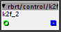
description:
converts integer k-rate ticks (0.333 msec) to something like HZ,
in order to set the speed of oscillators.
it's meant to be used in conjunction with the 'LFO/saw lin' object.
for more info,have a look at the 'taptempo.axs' in the library under patches/rbrt
rbrt
#32
gate_hold_i
integer version.
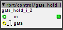
description :
a gate with sample and hold.
when the gate is closed , the last input passing will be held.
rbrt
#35
steptoggle
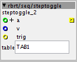
description:
useful for building a step sequencer,classic layout (808,909...)
when receiving a pulse at 'trig', the object will lookup the table's value at index '+a'.
if the value is zero, the sample at index '+a' will be set to the value of 'v',
if the value is non-zero,the sample will be set to zero.
'v' could be note-on velocity,for example..
update: added outlet,providing feedback about the state of the current sample after toggling
rbrt
#36
demux_sh
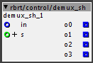
description:
demultiplexer with sample and hold.connects inlet in to outlet number s.
the current value of output number s will be held until the value of inlet in changes.
when s changes,the output value of the previous outlet number s will be held.
I guess this is useful for routing modulation sources.
rbrt
#37
dialmatrix 4 16
{kind=link}
description:
demultiplexes data incoming on 4 inlets to 16 dials named in the format 'rowcolumn'.
the 'rows' are wired to the inlets 'in0' to 'in3',the 'column' is defined by the inlet 's'
(so for example 4 dials receiving from in2 have to be named '20' '21' '22' and '23')
once 's' is changed, 'dialmatrix' will wait until the input changes before updating the 'target-dial'.
done in an effort to control 4 different drum-sounds from 4 midi-controllers.
works with the preset-manager by @DrJustice !
please note :
unfortunately,all 'target-dials' have to be present in your patch,otherwise you will get an error
and the patch cannot go 'live'.
you can find patchers with subpatchers already containing a 'dialmatrix' and the respective dials in contrib/rbrt/patches.
to use them,copy / paste the subpatcher to your patch.
you may use several instances of 'dialmatrix' in different subpatchers,BUT it's not possible to store them with
the 'preset-manager', since the dials in the subpatchers have the same ID's.
check out 'tablestore 8' for a more elegant solution.
Using just a few rotary encoders to control almost every parameter of axoloti?
rbrt
#38
...more dialmatrix
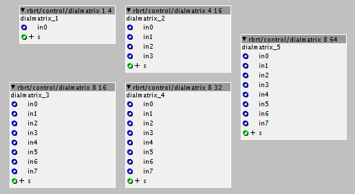
same as above,comes in the taste 1 to 4 ,8 to 16 , 8 to 32 and 8 to 64 dials
again,get yourself the respective patch at contrib/rbrt/patches to avoid the boredom!!
rbrt
#39
tablestore
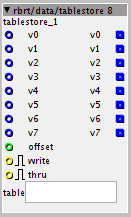
description:
stores and outputs 8 values in a table.
if 'write' is set to on and the input is changed,the value at input 'vn' will be stored in the table at index 'n' + 'offset'.
if 'write' is off, the data will be put out.
if 'thru' is set to on,the value at input 'vn' will be passed through to output 'vn' without being stored.
you may 'step through' the data in the table by changing 'offset'.
done in an effort to de-multiplex and store data from 8 midi-controllers to different destinations,
since the table can be saved to and loaded from sd-card.
Storing data as a sample?